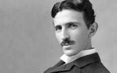

Никола Тесла био је српски и амерички проналазач, инжењер електротехнике и машинства и футуриста, најпознатији по свом доприносу у пројектовању модерног система напајања наизменичном струјом.
Најзначајнији Теслини проналасци су полифазни систем, обртно магнетско поље, асинхрони мотор, синхрони мотор и Теслин трансформатор. Такође, открио је један од начина за генерисање високофреквентне струје, дао је значајан допринос у преносу и модулацији радио-сигнала, а остали су запажени и његови радови у области рендгенских зрака.
Његов систем наизменичних струја је омогућио знатно лакши и ефикаснији пренос електричне енергије на даљину. Био је кључни човек у изградњи прве хидроцентрале на Нијагариним водопадима.
Никола Тесла је аутор више од 700 патената, регистрованих у 25 земаља, од чега у области електротехнике 112.
ЛИНК ЗА ИНФОРМАЦИЈЕ О ТЕСЛИНОМ РАНОМ ЖИВОТУ

ЛИНК ЗА ИНФОРМАЦИЈЕ О ТЕСЛИНОМ ЗАПОСЛЕЊУ И СРЕДЊЕМ ЖИВОТУ

ЛИНК ЗА ИНФОРМАЦИЈЕ О ПАТЕНТИ/НАГРАДЕ И СМРТИ НИКОЛЕ ТЕСЛЕ
Аutobiografskо дело о Николи Тесли